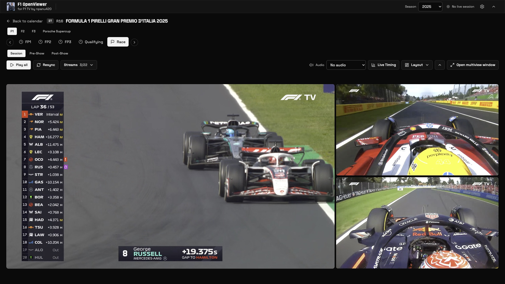
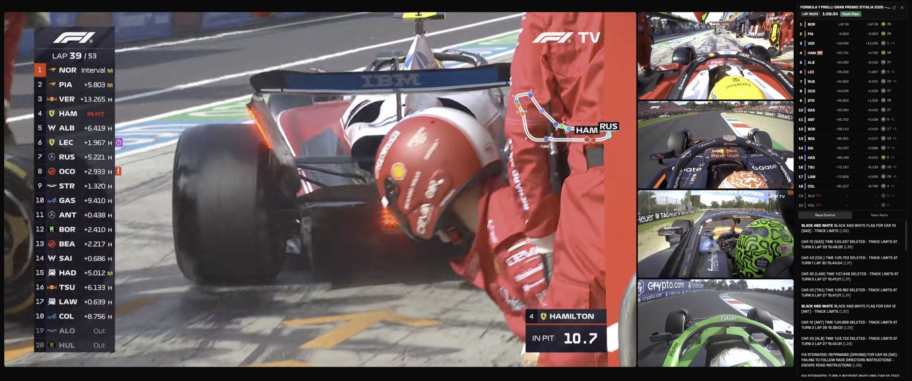

What you need
Multiview for F1 means watching more than one camera at the same time: the main race feed, your favourite driver’s onboard, or several perspectives in a single layout. OpenViewer is an independent, open-source F1 TV desktop app that brings those streams together.
- A supported computer. OpenViewer provides Windows and macOS downloads. The current Mac build is for Apple Silicon.
- Your own F1 TV account. Video requires an active Pro or Premium subscription with access to the session in your region. Your subscription’s restrictions still apply.
- The latest OpenViewer release. The download buttons on this site check GitHub for the current release. You can change the selected operating system before downloading.
The app is free under the MIT licence. That price covers the app; F1 TV video access is a separate subscription.
Create your first layout
Get the app
Download the build for your computer and open OpenViewer. The release page lists the available files. If you want to build from source, use the project’s developer setup guide.
Sign in and choose a session
Sign in to F1 TV inside the app using one of its supported login options. Choose the race weekend and session you want to watch. Available live sessions and replays depend on your F1 TV access.
Choose your F1 cameras
Start with the main feed, then add your preferred onboard cameras. Use auto layout to arrange the streams around the available window space. The main feed stays prominent, with your selected drivers alongside it.
Make the layout yours
Add, remove or swap panels, or arrange them manually. Save a layout you like for another race weekend. Use Open multiview window to give the whole view its own window and watch it fullscreen.


Keep the race in context
Open Live Timing beside the session or in a separate window. The timing view includes standings, gaps, sector times, tyre stints, Race Control messages and team radio clips. The onboard driver HUD also shows details such as speed, gear and lap times; DRS data is available for seasons that include it.
OpenViewer keeps the video streams aligned to the main feed. If that feed rebuffers, the other videos wait for it. Replay timing uses an automatic video-to-timing offset lookup; when a session cannot be matched, manual alignment remains available.
Live timing is different from replay alignment. During a live session, the timing feed can lead F1 TV video by tens of seconds. Do not assume that automatic replay alignment also removes that live-video delay.

Live Timing uses a public archive and does not require F1 TV login. Playing race video still requires your own valid F1 TV subscription.
Fit your screen
Auto layout follows the window while keeping video tiles at 16:9. The number of visible streams adapts to the space, so making the window larger can make room for more feeds. On an ultrawide monitor, the main feed, driver onboards and timing can share the wider workspace.
For a repeatable setup, save your preferred arrangement. For a closer look at one driver, use a layout with a larger onboard and fewer supporting feeds. The website’s interactive timing demo shows how the timing rows adapt as their panel changes size.


Common questions
Can I use F1 TV multiview on Mac?
Yes. OpenViewer supports macOS, with an Apple Silicon build in the current downloads. Windows is supported too. Use the platform selector below to choose the build you need.
How many F1 onboards can I watch?
Choose from the feeds available for your session. How many fit in auto layout depends on the window, while smooth playback also depends on your computer, connection and F1 TV access.
Why can’t I play a race video?
Check your account, subscription and regional access first. OpenViewer uses F1 TV’s login, entitlement checks and DRM playback. For a specific playback problem, check the project’s issue tracker and release notes.
Where can I see what OpenViewer supports?
The project README documents the features, and the MIT licence covers the source code. You can also return to the OpenViewer overview to try the 3D preview and watch the auto-layout demonstration.